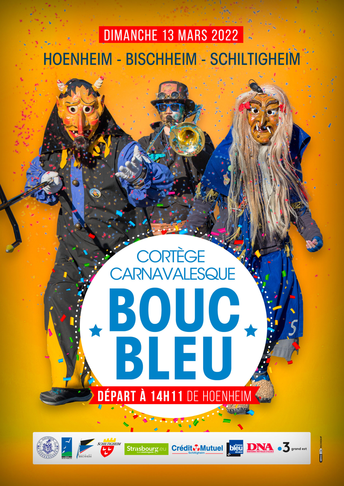

- Cet événement est terminé
La 40e cavalcade du Bouc Bleu
13 mars 2022 à 14 h 10 min - 17 h 10 min
Navigation de l'événement

🥳 La 40e cavalcade du Bouc Bleu aura lieu dimanche 13 mars au départ de la rue des Vosges à Hoenheim à 14h11. Elle empruntera les rues de la Fontaine et de la République puis route de Bischwiller et enfin, rue Saint-Charles à Schiltigheim (parking Heineken).
Le défilé qui se déroulera sur l’axe principal qui relie les trois communes, entraînera l’interdiction de circuler route de Bischwiller de 12h à 20h et de stationner de 8h à 20h à Bischheim et Schiltigheim et de 8h à 18h à Hoenheim.
Soirée spectacle
En attendant de se mettre en marche pour le cortège, le club carnavalesque du Bouc Bleu organise le samedi 12 mars à partir de 19h une soirée spectacle carnavalesque.
Salle de la Briqueterie (Avenue de la 2e Division Blindée – 67 300 Schiltigheim).
Tarif : 15 euros
Pass vaccinal obligatoire
Pour tout renseignement complémentaire et réservation : Valérie Zinck au 06 60 07 54 23 (après 19h).
#carnaval #cavalcade #boucbleu #hœnheim #bischheim #schiltigheim